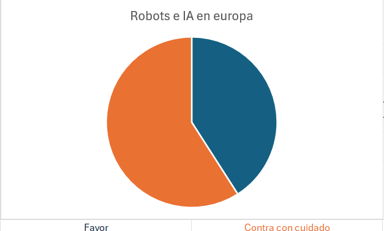

"En todo el mundo se está destinando ya mucho dinero al desarrollo de sistemas de IA. Esto demuestra el enorme potencial económico de la IA. Sin embargo, a medida que crece el uso de las aplicaciones de IA, también aumenta la preocupación, por ejemplo, por la importancia de valores humanos como la equidad, la libertad, la privacidad, la seguridad y la responsabilidad. En la actualidad, casi ningún otro desarrollo nos pregunta de forma tan clara y exhaustiva cómo queremos integrar nuestras capacidades técnicas en el contexto de la sociedad. Lo cierto es que esta tecnología ya ha cambiado profundamente nuestra vida cotidiana y seguirá haciéndolo." Parlamento europeo, 2024
El 61 % de los europeos está a favor de la IA y de los robots, pero el 88 % cree que necesitan un cuidado particular.
 <La IA ha penetrado profundamente en nuestras vidas, desde nuestros teléfonos inteligentes hasta la infraestructura de las ciudades. Su influencia es evidente en la automatización de procesos, la toma de decisiones informadas y la capacidad de aprender y mejorar con el tiempo. Algunos ejemplos notables son: Atención médica: la IA ha revolucionado el diagnóstico médico al analizar imágenes médicas y patrones para detectar enfermedades en sus etapas más tempranas. Industria automotriz: los vehículos autónomos, impulsados por la IA, están transformando la movilidad y la seguridad en las carreteras. Servicio al cliente: los chatbots y asistentes virtuales basados en IA mejoran la atención al cliente al proporcionar respuestas rápidas y precisas a las consultas.